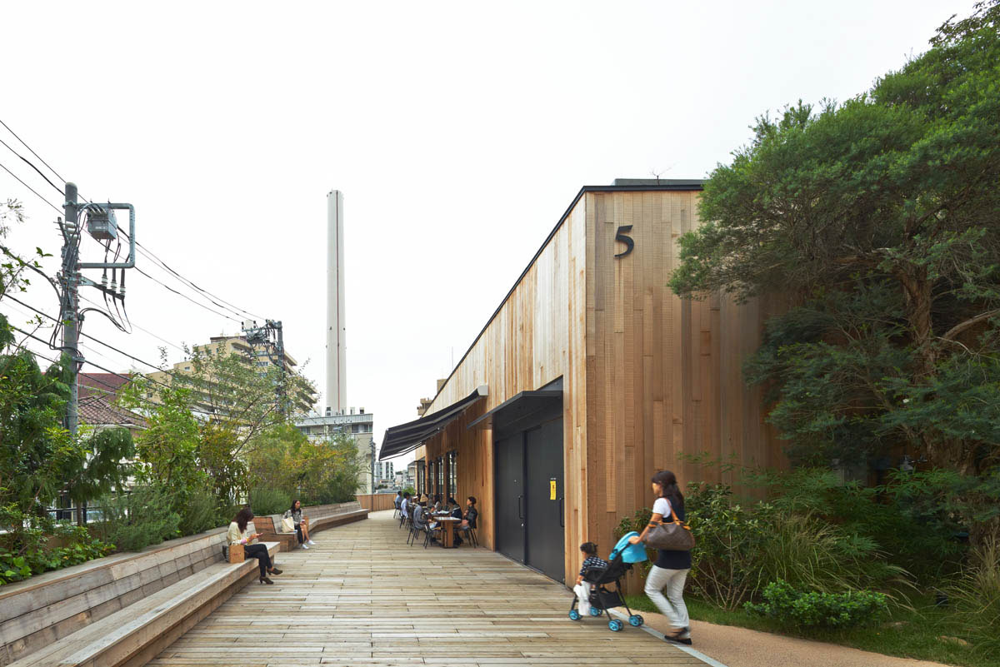

hh
海河 · 公园商业研究
REVISION 03 / 运营场景
RIVER / PARK / EVERYDAY COMMERCE
把商业，
放进
公园。
一栋栋小店，穿插草坪、树林与庭院。新增市集、体育培训、亲子玩水、露营与文化活动案例，研究天津海河约400—500米长条公园如何持续使用与经营。
51
项目案例
31
+
20
国内 / 海外
—
本地图片与图纸

27 / LOG ROAD DAIKANYAMA
旧铁路线上的公园商业，东京
© Daici Ano · General Design
修订03 · 新增20案，深化麓湖CPI；原31案保留。新增“运营策略”与主题筛选，每案从客群、布局、经营、收入路径、证据、海河应用与四季使用7个方面解读。编号沿用检索档案。
本次研究口径
保留独立小屋与低层组团的空间研究，新增公园中的经营节点和活动模式。每案限定研究范围；图纸缺项、运营事实与本次建议分别说明，收入机会不等于已证实盈利。
案例图集
运营策略
总图与鸟瞰
案例总览
海河设计启发
本地可浏览 · 图片可放大 · 来源可追溯
⌕
全部地区
国内 · 31
海外 · 20
新加坡
日本
泰国
美国
英国
全部运营主题
市集与活动
运动与培训
亲子与玩水
露营与度假
自然教育
园艺与零售
文化与展演
滨水与水上活动
图纸不限
有总平面
有建筑平面
总图与平面都有
只看本次新增
只看收藏
全部案例
跳到多图 ↓
打印本案
关闭 ×
保存本地图
原尺寸
关闭 ×
‹
查看来源 ↗
›